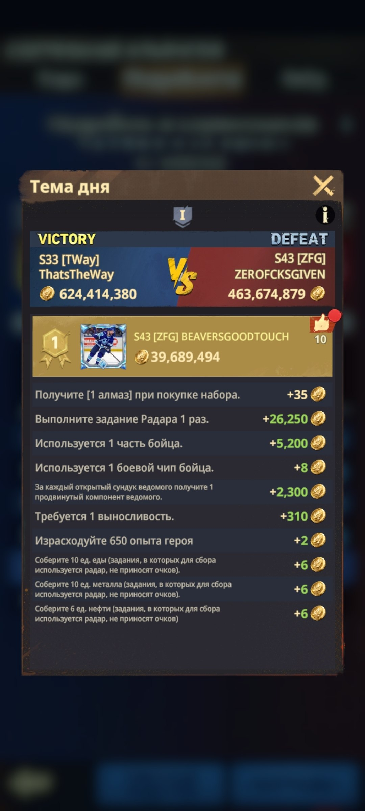
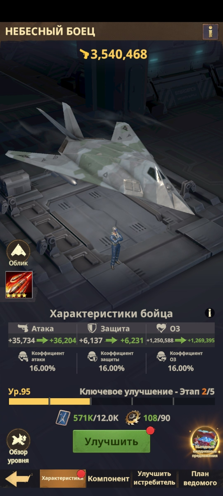
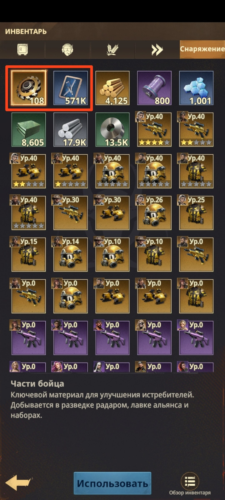
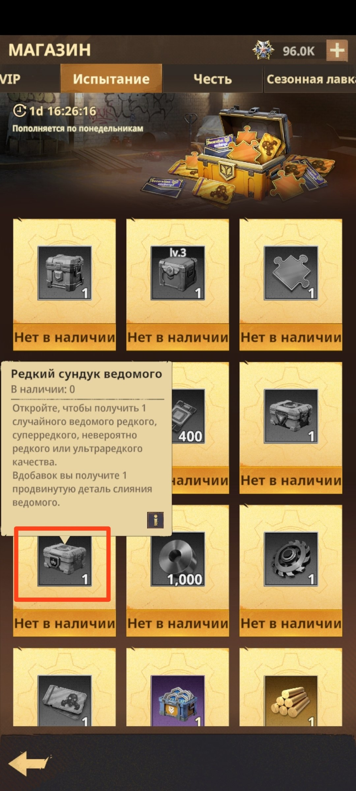
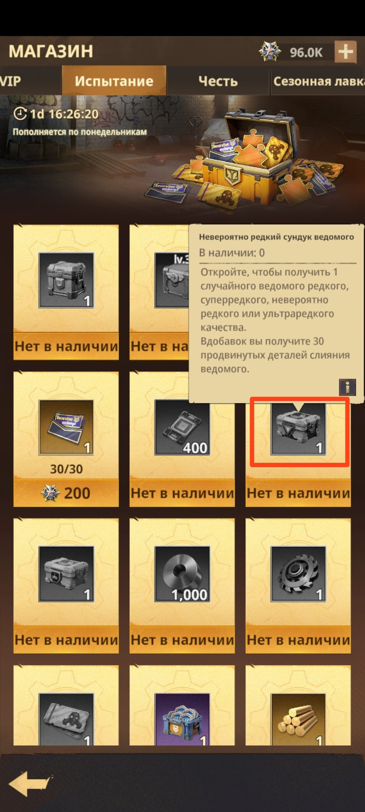
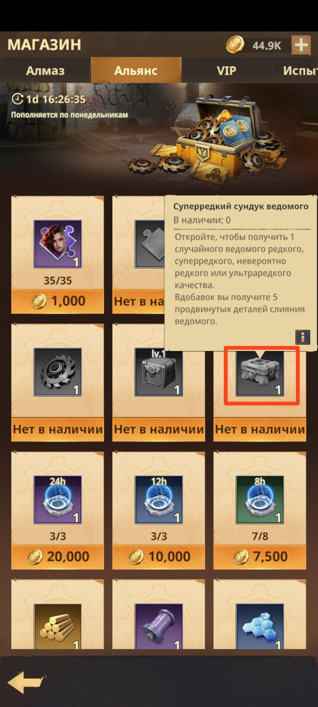

📅 Понедельник
📅 Понедельник ❓ За какие задания получаем очки VS? 🎯 Радар + выносливость/энергия/стамина С самого утра Понедельника открываем Радар и полностью выполняем все накопленные на нём задания.
🌾🛢️⚙️ Очки за сбор ресурсов Также отправляем все свободные отряды снова на ресурсные плитки (пшена, нефти, металла) и держим их там до 5 утра МСК вторника.
✈️ Боевые чипы и части Бойца для Истребителя Тратим боевые чипы и части Бойца (шестерёнки), то есть поднимаем уровень своему Истребителю. 💡 Рекомендуем тратить их после 21:00 по МСК, чтобы получать очки одновременно и за VS, и за «Готовность к миссии».
🎁 Открытие сундуков с Ведомыми/дронами Эти сундуки можно скупать в магазинах Альянса и Испытаний - они обновляются каждый понедельник, как раз под очки VS. Скупаем и открываем.
⭐ Использование опыта Героев Это только в крайнем случае, когда очень надо добить очков на какой-то ящик с наградами. 💡 В приоритете весь опыт Героев используем в Четверг.

📋 «Тема дня» - полный список действий, за которые начисляются очки VS

✈️ Экран Истребителя «Небесный боец» - сюда тратятся боевые чипы и части Бойца

🎒 Инвентарь - «Части бойца» (шестерёнки) и «Боевые чипы», нужные для улучшения Истребителя

📦 Магазин «Испытание» - «Редкий сундук ведомого», обновляется по понедельникам

📦 Магазин «Испытание» - «Невероятно редкий сундук ведомого»

📦 Магазин «Альянс» - «Суперредкий сундук ведомого», тоже обновляется по понедельникам